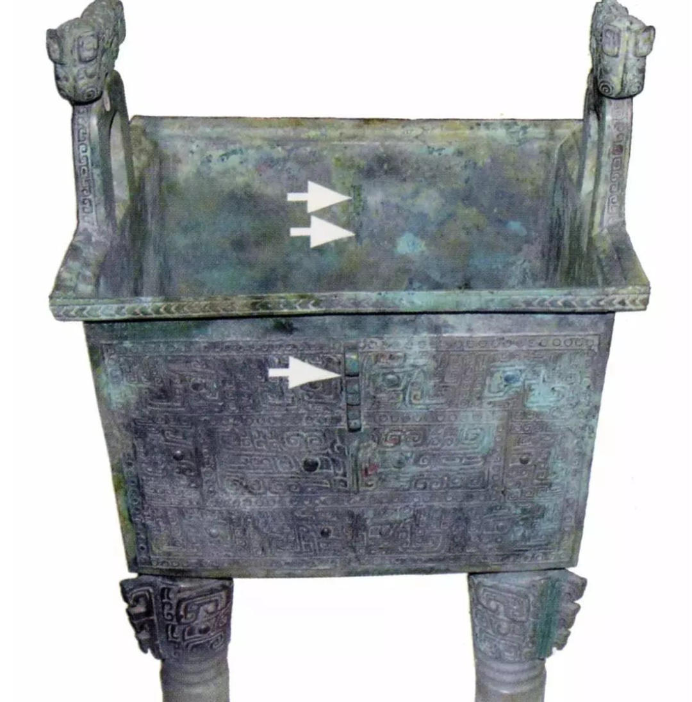

榫卯文化
阴阳互补，虚实相生 - 榫卯技艺中的哲学智慧
阴阳平衡
点击翻转了解更多
阴阳平衡
榫为阳，卯为阴，榫卯结构完美体现了中国传统阴阳哲学。阴阳互补，刚柔并济，榫卯结构在连接中寻求平衡，在平衡中达到和谐。
天人合一
点击翻转了解更多
天人合一
榫卯结构尊重木材的自然属性，顺应纹理，利用木材的弹性与韧性，体现了"道法自然"的哲学思想，达到人与自然的和谐统一。
循环往复
点击翻转了解更多
循环往复
榫卯结构可拆卸、可重组，体现了中国传统循环观念。这种可逆性设计不仅便于维修，更蕴含了"周而复始"的宇宙观。
榫卯文化发展历程

约7000年前
河姆渡文化时期
在浙江余姚河姆渡遗址中发现了最早的榫卯结构，主要用于干栏式建筑，标志着榫卯技术的萌芽。

商周时期
青铜器与木作结合
青铜工具的出现使榫卯工艺更加精细，应用于宫殿建筑和贵族家具，技术日趋成熟。
唐宋时期
技艺高峰
唐宋建筑将榫卯技艺推向高峰，斗拱系统复杂精巧，成为东方建筑体系的标志性特征。

明清时期
家具艺术巅峰
明式家具将榫卯技艺与审美完美结合，创造了世界家具史上的辉煌篇章，技艺达至化境。

现代
传承与创新
榫卯技艺与现代设计、建筑结合，焕发新的生命力，成为连接传统与现代的文化桥梁。